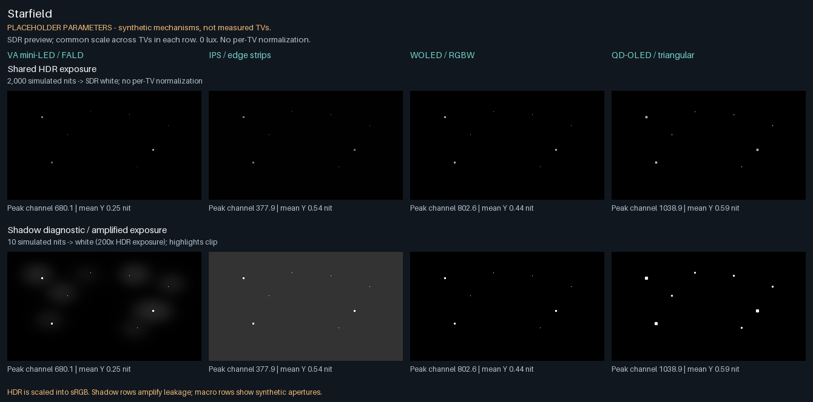
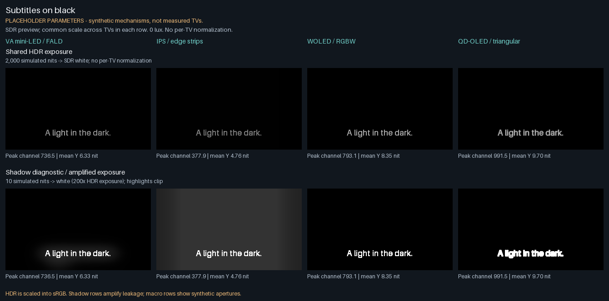
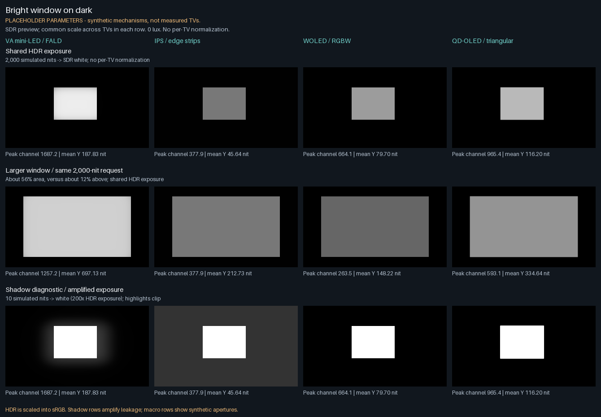
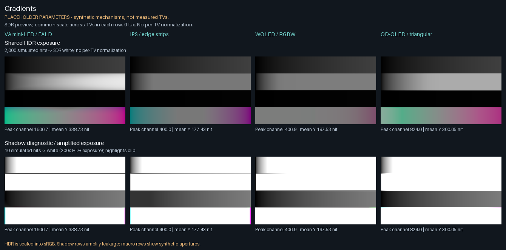
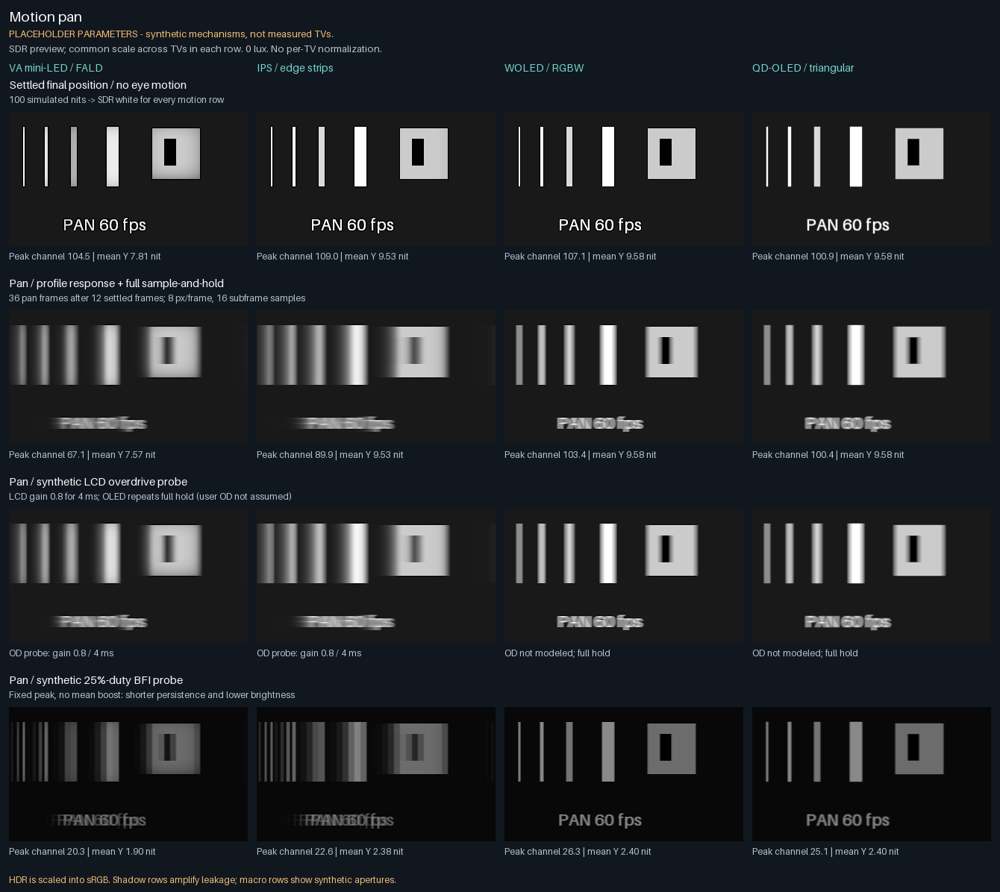
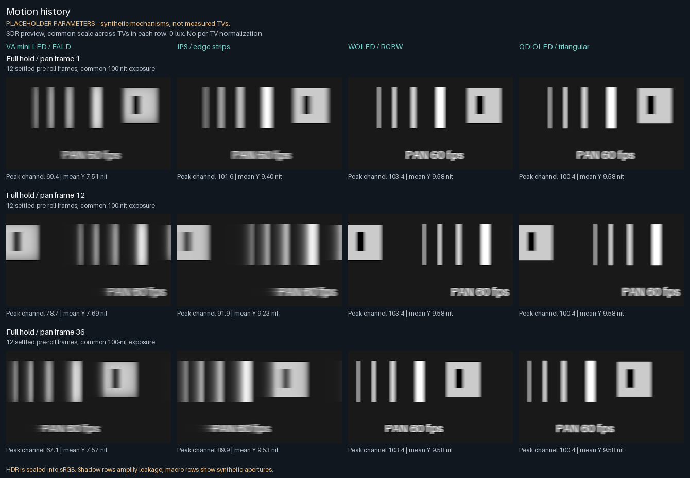
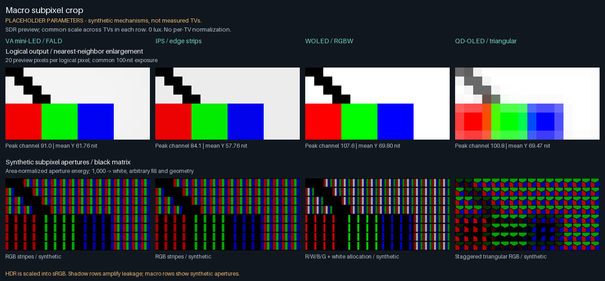

TV DISPLAY SIMULATOR / CPU NUMPY REFERENCEFour TVs, one source.
Placeholder parameters, not measurements or retail-TV emulations.
HDR is scaled into an SDR sRGB preview. Your screen cannot reproduce the simulated peak or black level.
Every comparison row uses a shared exposure; there is no per-TV auto-normalization.
Click a contact sheet for its full-size PNG. This folder works offline with relative image paths.
The default columns are VA mini-LED, IPS edge LCD, WOLED, QD-OLED. All receive identical float PQ sources;
ambient is 0 lux, on-axis, and profile spatial processing stays enabled.
Protocol, scales and profile settings
HDR rows: 2,000 simulated nits maps to preview white. Shadow diagnostics: 10 nits maps to white
(200× exposure); brighter pixels clip. Motion: 100 nits maps to white. Macro apertures: 1,000 maps to white.
These are exposure choices, not a calibrated observer model or HDR encoding.
| Placeholder profile | Response tau (not GtG) | Emitter/backlight peak | Layout |
|---|
| VA mini-LED / FALD | 8.0 ms | 2000.0 nit | rgb_stripe |
| IPS / edge strips | 12.0 ms | 400.0 nit | rgb_stripe |
| WOLED / RGBW | 0.2 ms | 850.0 nit | wrgb |
| QD-OLED / triangular | 0.1 ms | 1100.0 nit | qd_oled |
Motion uses 12 settled pre-roll frames plus 36 advancing pan frames at approximately 60 Hz,
8 pixels/frame (~480 pixels/s), 16 subframe integration samples. Each mode starts with fresh state.
The final-frame snapshots model pursuit integration, not a stationary-camera photograph.
OD is an explicit LCD-only probe (gain 0.8, 4-ms prefix); OLED columns repeat full hold.
BFI is an assumed centered 25%-duty single pulse at fixed peak, without brightness compensation.
Neither probe claims a supported retail mode. No MEMC, scanout, PWM or measured response LUT is modeled.
Macro masks have a black matrix, equal logical-pixel pitch and arbitrary aperture dimensions.
RGBW allocation and staggered triangular QD geometry are synthetic, not micrographs or a measured
Pentile resolution model. Aperture amplitudes are area-normalized, so their peaks are not measured emitter nits.
QD-OLED has a placeholder 0.45-pixel optical PSF; WOLED has none. The two OLED previews can therefore differ in edge softness.
Exact settings, YAML hashes, row scales and linear output statistics: manifest.json.
Starfield
Sparse 600-2,000-nit stars expose highlight retention, local LCD leakage and optical softness.

Subtitles on black
1,000-nit subtitle glyphs reveal local FALD halos versus the IPS full-height strip lift.

Bright window on dark
2,000-nit windows at roughly 12% and 56% area show brightness limits and area dependence.

Gradients
Top to bottom: neutral 0-100, 0-2,000, 0-2 nits, then a synthetic RGB mixture. No gamut calibration.

Motion pan
Compare final-frame pursuit views after a long persistent history. Slow response adds trails; even fast OLED has full-hold blur.

Motion history
The same persistent pipelines at pan frames 1, 12 and 36. Translation wraps at the image boundary; each source frame is a new position.

Macro subpixel crop
A 16x8 logical-pixel crop enlarged at equal pitch. Neutral top and RGBW bars below expose RGB stripes, white allocation and QD triangular geometry.

Reproduce: python3 -m sim gallery. In the source repository, docs/REPORT.md
and research/m5-fidelity.md describe validation and model boundaries.